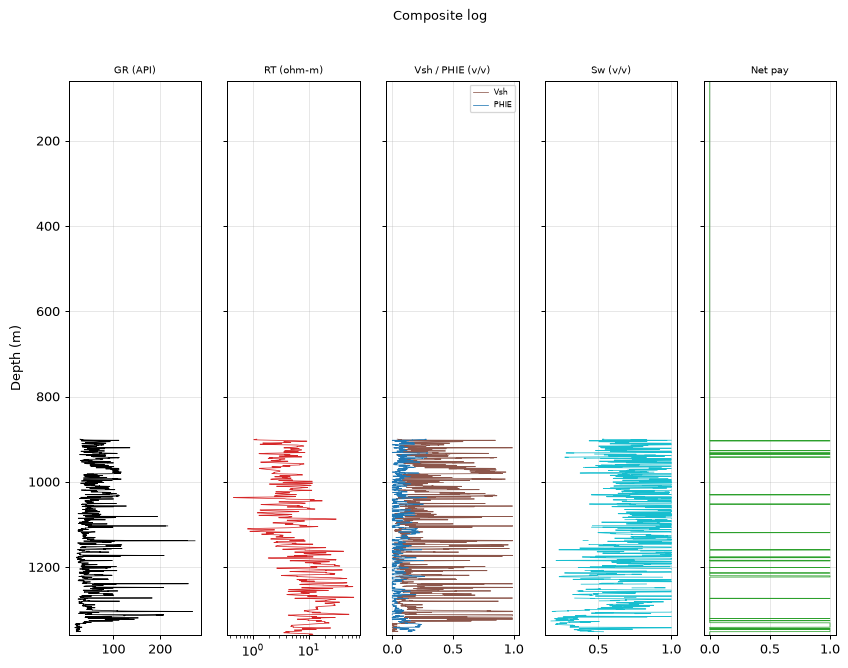
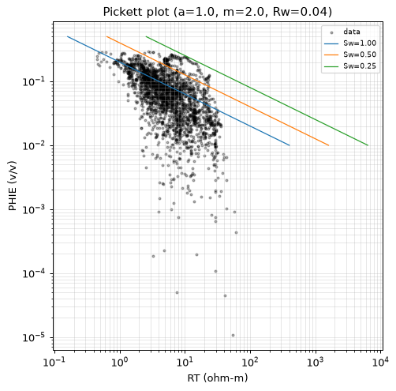
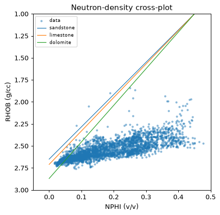
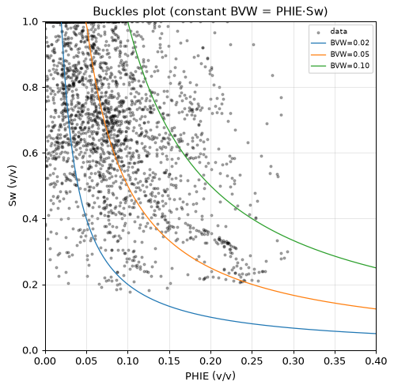
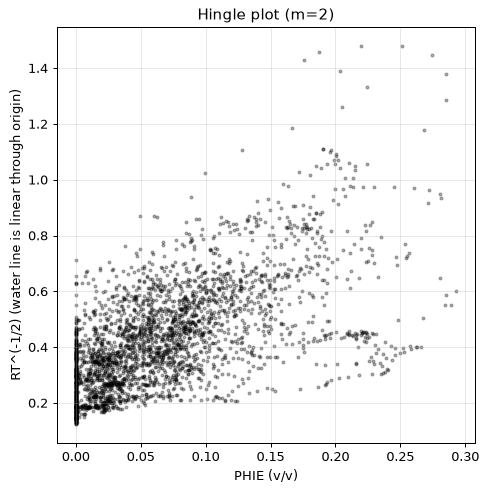
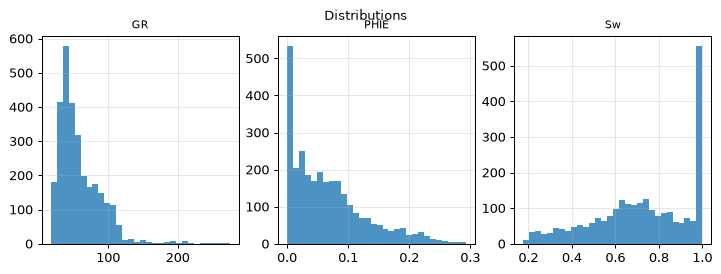
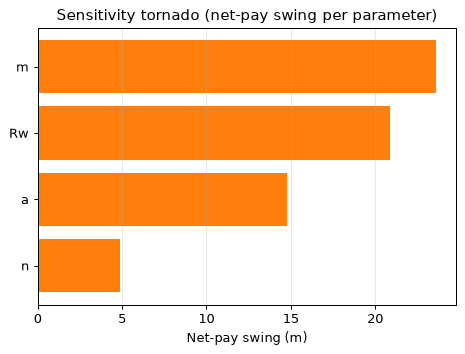
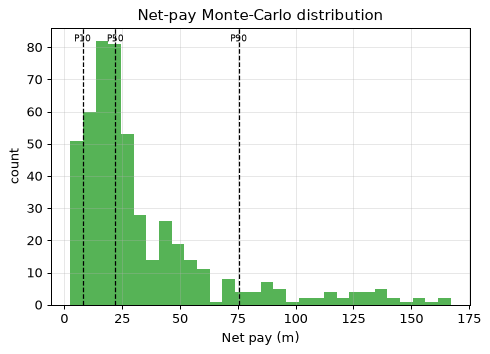

| Well (UWI) | 15-135-26002-00-00 |
| Log date | 6/26/2018 |
| Service company | Pioneer Energy Services |
| Acquisition date (header) | 6/26/2018 |
| PLSS location | Sec 1 T20S R22W (map precision ±1.6 km) |
| Larionov variant | old_rocks (degraded) |
| Convergence status | DID_NOT_CONVERGE |
| Confidence tier | ○ BRACKETED |
| Engine versions | calc_vsh 0.1.0 · calc_phie 0.1.0 · calc_sw 0.1.0 · formula_registry 0.1.0 |
| Config hash (SHA-256) | 2a9cb78728e386ab… |
| Git SHA | bd23bea18153 |
| Generated | autonomously, no human in the per-report loop |
Confidence legend. Each result is tagged by parameter provenance: ● FIRM (core-calibrated) · ◐ QUALIFIED (offset-derived) · ○ BRACKETED (regional/global default — read as a range, dominant uncertainty stated). The system does not claim *always correct*; it states how well-supported each number is.
⚠️ ABSTENTION — this is NOT a confident estimate. The run did not converge to a defensible result; the numbers below are an uncalibrated engineering estimate, reported for transparency only:
- 1 unresolved MECHANICAL objection(s)
The evaluation is restricted to the consolidated section between 900.0 m and 1360.0 m — the interval above it is not evaluated (unconsolidated, washed-out response). Within that interval the net pay is 28.3 m with average effective porosity 0.180 and average water saturation 0.341. Monte-Carlo places the P50 net pay at 22.1 m within a P10-P90 range of 7.9 to 75.4 m. An independent SP-derived water resistivity of 0.0494 ohm-m (static SP -46.2 mV; offset-median mud-filtrate resistivity 0.110 ohm-m — a declared cross-well assumption) supports the regional default, and the Monte-Carlo Rw range is narrowed to the field SP band with recorded provenance. The Rxo/Rt movable-hydrocarbon index reads a median of 0.646 over 3007 samples — an invasion-based indicator profile, not a saturation. The run ABSTAINS from a confident estimate: the validators keep an unresolved objection, so the result must be read as a bracketed range, not a point value.
Net pay P10 / P50 / P90 = 7.9 / 22.1 / 75.4 m.
Net pay is dominated by 'm', which is a regional DEFAULT (uncalibrated). This is the single largest uncertainty — the result is bracketed, not a confident point estimate.
| Edit type | Curve | Detail |
|---|---|---|
| unit_conversion | NPHI | factor 0.01 |
| hard_range_mask | PHID_SVC | count 5 |
| hard_range_mask | DRHO | count 4 |
| hard_range_mask | RT | count 116 |
| hard_range_mask | RMED | count 54 |
| range_warn | RHOB | count 4 |
| spike_removal | — | 85 edits |
| degradation | — | 3 edits |
Raw mnemonics mapped to canonical curve names:
| Canonical | Raw mnemonic |
|---|---|
| DCAL | DCAL |
| DRHO | RHOC |
| DT | DT |
| GR | GR |
| NPHI | CNLS |
| NPHI_DOL | CNDL |
| NPHI_SS | CNSS |
| PHID_SVC | DPOR |
| RHOB | RHOB |
| RMED | RILM |
| RT | RILD |
| RXO | RLL3 |
| SP | SP |
Unit conversions: NPHI×0.01.
Edits applied before compute (by type): degradation: 3, hard_range_mask: 4, range_warn: 1, spike_removal: 85, unit_conversion: 1.
All numbers are produced by the deterministic, golden-tested engine. The LLM only selects methods/parameters and writes prose — it never computes a number. Figures are deterministic renderings of these computed numbers for the human reader; the agent reasons over the numeric EDA digest, not images (the models have no vision).
| Step | Method (frozen) | Version |
|---|---|---|
| Vsh | Larionov 1969 (old rocks) | vsh_larionov_old 0.1.0 |
| PHIE | Density-neutron crossplot, shale-corrected | phie_density_neutron 0.1.0 |
| Sw | Simandoux 1963 (shaly sand) | sw_simandoux 0.1.0 |
| Net pay | Vsh/PHIE/Sw cutoffs → net sand → net reservoir → net pay | netpay 0.1.0 |
| Uncertainty | Monte Carlo P10/P50/P90 + parameter sensitivity | mc 0.1.0 |
Low-resistivity scan: rt_threshold=1.4, n_flagged=834, intervals=[[94.0, 95.4], [279.3, 281.3], [283.2, 283.8], [285.0, 286.8], [289.1, 343.5], [349.1, 351.6], [366.8, 367.3], [404.3, 405.8], [407.4, 408.0], [421.1, 422.3]].
Invasion profile (multi-depth resistivities, 8328 samples): fraction with shallow reading above deep (Rxo/RT > 1.2, invaded/permeable indication): 0.594; reversed (< 0.8): 0.147; median Rxo/RT 1.331; median Rmed/RT 0.969. Raw-curve facts; naming moveable hydrocarbon is the analyst's judgement.
Matrix point-shares (fraction of points near each matrix line): sandstone: 0.059, limestone: 0.164, dolomite: 0.225. Engine crossplot output; naming the dominant lithology is the analyst's judgement. Comparison with core/mud log: not available (LAS-only).
M-N crossplot (porosity-independent, needs DT): quartz: 0.008, calcite: 0.377, dolomite: 0.615 over 2921 samples.
Composite log

Pickett plot

Neutron-density crossplot

Buckles plot

Hingle plot

Distributions

Sensitivity tornado

Net-pay Monte-Carlo distribution

Mean Sw (Simandoux 1963 (shaly sand)) = 0.722 (a=1.00, m=2.00, n=2.00, Rw=0.0256 ohm-m). Electrical parameters are engine-sourced; alternative Sw models are optional sections.
Mean Sw by method (engine-computed comparison; the LLM authors no number):
| Method | Mean Sw | Selected |
|---|---|---|
| sw_archie | 0.856 | |
| sw_simandoux | 0.722 | ✓ |
| sw_indonesia | 0.725 |
Raw net-pay runs merged into 20 intervals (gap tolerance 1.5 m); showing the 15 thickest, depth-ordered. Full set traces in the ledger.
| Interval | Top (m) | Base (m) | Net pay (m) | Avg PHIE | Avg Sw | Avg Vsh |
|---|---|---|---|---|---|---|
| Z1 | 903.7 | 904.0 | 0.5 | 0.129 | 0.459 | 0.058 |
| Z2 | 926.9 | 927.0 | 0.3 | 0.121 | 0.490 | 0.211 |
| Z3 | 941.7 | 942.1 | 0.6 | 0.154 | 0.360 | 0.297 |
| Z4 | 1051.9 | 1052.6 | 0.9 | 0.231 | 0.458 | 0.079 |
| Z5 | 1119.2 | 1119.4 | 0.3 | 0.218 | 0.499 | 0.061 |
| Z6 | 1158.8 | 1160.2 | 1.5 | 0.195 | 0.314 | 0.031 |
| Z7 | 1176.4 | 1178.1 | 1.2 | 0.151 | 0.448 | 0.028 |
| Z8 | 1184.1 | 1185.4 | 0.6 | 0.179 | 0.313 | 0.209 |
| Z9 | 1213.7 | 1214.0 | 0.5 | 0.108 | 0.279 | 0.089 |
| Z10 | 1220.6 | 1223.3 | 2.9 | 0.228 | 0.271 | 0.090 |
| Z11 | 1273.3 | 1273.8 | 0.6 | 0.122 | 0.464 | 0.139 |
| Z12 | 1325.6 | 1326.0 | 0.6 | 0.128 | 0.249 | 0.187 |
| Z13 | 1330.8 | 1341.1 | 10.5 | 0.198 | 0.286 | 0.029 |
| Z14 | 1343.9 | 1345.1 | 1.4 | 0.124 | 0.424 | 0.020 |
| Z15 | 1346.6 | 1351.5 | 5.0 | 0.154 | 0.406 | 0.016 |
| Quantity | Value |
|---|---|
| Gross interval | 460.0 m |
| Net pay (P10/P50/P90) | 7.9 / 22.1 / 75.4 m |
| Net-to-gross | 0.062 |
| Avg PHIE (net pay) | 0.180 |
| Avg Sw (net pay) | 0.341 |
| Avg Vsh (net pay) | 0.061 |
Monte Carlo, 500 realizations (seed 42). Net pay swing per parameter (one-at-a-time):
| Parameter | Net-pay swing (m) |
|---|---|
| m | 23.6 |
| Rw | 20.9 |
| a | 14.8 |
| n | 4.9 |
Dominant uncertainty: m (swing 23.6 m).
Multi-seed robustness: P50 stable (spread 1.8 m across 4 seeds).
Net pay is dominated by 'm', which is a regional DEFAULT (uncalibrated). This is the single largest uncertainty — the result is bracketed, not a confident point estimate.
_Uncalibrated screening estimate (no core); Sw used as the Swirr proxy._
_Built on the uncalibrated permeability; indicative only._
Unsupervised k-means on 2914 samples into 4 electrofacies (sample counts: facies 0: 999, facies 1: 441, facies 2: 929, facies 3: 545). Descriptive only — no core labels.
| Parameter | Value | Unit | Provenance | Source |
|---|---|---|---|---|
| gr_min | 20.000 | API | default | — |
| gr_max | 120.000 | API | default | — |
| rho_ma | 2.710 | g/cc | default | Schlumberger 1989 |
| rho_fl | 1.000 | g/cc | default | — |
| phie_max | 0.450 | v/v | default | — |
| phi_sh_d | 0.100 | v/v | default | — |
| phi_sh_n | 0.350 | v/v | default | — |
| a | 1.000 | - | default | Winsauer et al. 1952 |
| m | 2.000 | - | default | Archie, G.E. 1942 |
| n | 2.000 | - | default | Archie, G.E. 1942 |
| Rw | 0.040 | ohm-m | default | Kansas Geological Survey 2000 |
| rt_hydrocarbon_floor | 5.000 | ohm-m | default | — |
| vsh_cutoff | 0.350 | v/v | default | — |
| phie_cutoff | 0.100 | v/v | default | — |
| sw_cutoff | 0.500 | v/v | default | — |
| bit_size_config | 7.875 | in | default | — |
| qc_abort_threshold | 0.800 | - | default | — |
| circuit_breaker_n | 3.000 | - | default | — |
The citations table (not RAG) gives each cited parameter exactly one frozen source. Parameters tagged
defaultare regional/global — they drive the bracketed tier.
Boundary-inclusive criteria applied by the engine (netpay) to flag reservoir:
| Stage | Criterion | Cutoff | Provenance |
|---|---|---|---|
| Net sand | Vsh ≤ cutoff | 0.350 | default |
| Net reservoir | + PHIE ≥ cutoff | 0.100 | default |
| Net pay | + Sw ≤ cutoff | 0.500 | default |
Cutoff values are engine parameters (never LLM-authored); the dominant net-pay uncertainty is m — see Uncertainty for the swing.
Curve provenance (canonical ← raw mnemonic): DCAL←DCAL, DRHO←RHOC, DT←DT, GR←GR, NPHI←CNLS, NPHI_DOL←CNDL, NPHI_SS←CNSS, PHID_SVC←DPOR, RHOB←RHOB, RMED←RILM, RT←RILD, RXO←RLL3, SP←SP.
QC edits applied before compute — degradation: 3, hard_range_mask: 4, range_warn: 1, spike_removal: 85, unit_conversion: 1.
| Validator | Type | Detail |
|---|---|---|
| vsh_phie_anticorrelation | support | Vsh-PHIE Pearson 0.93 > 0.3 (dirty rock + high porosity) |
| rt_sw_consistency | mechanical | 45 depths with Sw<0.4 but RT<5.0 ohm-m |
flowchart TD
dec_1["decision: step: set_zone_of_interest"]
act_1["tool_call: set_zone_of_interest"]
dec_2["decision: step: compare_methods"]
act_2["tool_call: compare_methods"]
dec_3["decision: wasted no-op: compute_vsh"]
dec_4["decision: wasted no-op: compute_phie"]
dec_5["decision: step: compare_methods"]
act_3["tool_call: compare_methods"]
dec_6["decision: step: compute_sw"]
act_4["tool_call: compute_sw"]
dec_7["decision: step: apply_cutoffs"]
act_5["tool_call: apply_cutoffs"]
dec_8["decision: step: run_uncertainty"]
act_6["tool_call: run_uncertainty"]
dec_9["decision: step: derived_parameters"]
act_7["tool_call: derived_parameters"]
dec_10["decision: step: permeability"]
act_8["tool_call: permeability"]
dec_11["decision: step: rock_quality"]
act_9["tool_call: rock_quality"]
dec_12["decision: step: electrofacies"]
act_10["tool_call: electrofacies"]
dec_13["decision: step: lithology"]
act_11["tool_call: lithology"]This is a LAS-only study. Data that would calibrate the interpretation is absent:
THE DT WELL. Exception to the field VSH rule: the N-D clay solvers read 0.35-0.42 against GR 0.26 — the density-neutron pair is skewed (suspected dolomitic matrix; NPHI median 0.27 at RHOB 2.51 is inconsistent with limestone). GR-based Larionov old-rocks is the robust estimator here; the M-N crossplot (litho_mn, this well only) adjudicates the matrix question. Simandoux for the higher clay reading. Method choices were made against the engine's numeric comparisons, not by preference; the comparison tables show the rejected alternatives beside the selected method. All numbers in this report come from the deterministic engine; the analyst chose the interval, the methods and the analyses, and wrote this prose — nothing more. Remaining uncertainty is dominated by the uncalibrated regional parameters.
{
"net_pay_total_m": 28.346400000000017,
"net_pay_p10_p50_p90": [
7.924800000000005,
22.098000000000013,
75.4075200000001
],
"driving_params": {
"a": 1.0,
"m": 2.0,
"n": 2.0,
"Rw": 0.04
},
"claim_verifier": {
"result": "PASS",
"flags": [],
"tone_flags": []
}
}| Item | Present |
|---|---|
| QC edits recorded before compute | ✓ |
| Every number ledger-traced | ✓ |
| Confidence tier on the run | ✓ |
| Parameter citations frozen | ✓ |
| Validator objections listed, not hidden | ✓ |
| Uncertainty propagated (Monte Carlo) | ✓ |
| Claim verifier run on prose | ✓ |